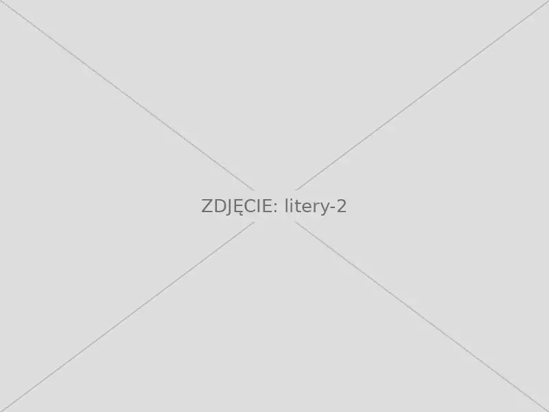

Litery przestrzenne Gdynia
Litery przestrzenne w Gdyni wykonujemy dla sklepów, lokali usługowych, biur i firm, które chcą wyraźnie oznaczyć fasadę, witrynę lub recepcję. Robimy litery 3D z podświetleniem LED lub bez, na zewnątrz i do wnętrz, od projektu po montaż na miejscu. Działamy w Gdyni i okolicach Trójmiasta [UZUPEŁNIJ: dokładny obszar działania].
Czym są litery przestrzenne
Litery przestrzenne (nazywane też literami 3D) to pojedyncze, wycinane znaki z widoczną grubością, montowane bezpośrednio na ścianie, elewacji, panelu lub konstrukcji. W przeciwieństwie do płaskiej tablicy czy naklejki tworzą trójwymiarowy napis, który dobrze wygląda z bliska i z daleka, także pod kątem.
Z liter przestrzennych można ułożyć nazwę firmy, logo, hasło albo pojedynczy znak graficzny. To jedna z najczęściej wybieranych form oznakowania przy szyldach na fasadę, bo wygląda elegancko, a jednocześnie nie zasłania architektury budynku. Więcej o innych formach oznakowania przeczytasz na stronie szyldy reklamowe Gdynia.
Rodzaje liter przestrzennych – podświetlane i niepodświetlane
Rodzaj liter dobieramy do miejsca montażu, budżetu i tego, czy napis ma być widoczny po zmroku. Najczęściej wybierane warianty to:
- 01
Litery niepodświetlane
Prostsze i tańsze, dobre do wnętrz, na recepcję lub na dobrze oświetloną elewację.
- 02
Litery podświetlane od frontu
Świeci lico litery, napis jest czytelny wieczorem i z dużej odległości.
- 03
Litery z podświetleniem tylnym (efekt halo)
Światło pada na ścianę za literą, dając dyskretną, elegancką poświatę.
- 04
Litery z podświetleniem frontu i boków
Maksymalna widoczność, np. przy ruchliwej ulicy.
W zależności od projektu stosujemy m.in. plexi, PCV spienione, dibond, aluminium lub stal nierdzewną [UZUPEŁNIJ: potwierdź materiały, z których wykonujecie litery]. Do podświetlenia używamy modułów LED – szczegóły znajdziesz na stronie reklama LED Gdynia.
Gdzie sprawdzają się litery przestrzenne w Gdyni: fasada, recepcja, biuro
Litery 3D pasują zarówno do lokalu przy głównej ulicy, jak i do biura w biurowcu. Typowe zastosowania to:
- 01
Fasada i elewacja
Nazwa sklepu, restauracji, salonu czy gabinetu nad wejściem lub na ścianie budynku.
- 02
Witryna i nadproże
Napis nad drzwiami albo na pasie nad oknem wystawowym.
- 03
Recepcja
Logo za ladą, które klient widzi od razu po wejściu.
- 04
Biuro i sala konferencyjna
Logo lub hasło firmy na ścianie, często bez podświetlenia albo z efektem halo.
- 05
Hale, salony i obiekty usługowe
Duże napisy widoczne z parkingu lub drogi.
Przy montażu na zewnątrz warto wcześniej sprawdzić, czy potrzebna jest zgoda wspólnoty, zarządcy budynku lub urzędu – podpowiemy, o co zapytać.
Realizacje liter przestrzennych w Gdyni
Najlepiej ocenić efekt, oglądając gotowe projekty. W naszej galerii pokazujemy litery na fasadach, w witrynach i we wnętrzach, z różnymi rodzajami podświetlenia.


[UZUPEŁNIJ: 2–4 krótkie opisy realizacji – branża klienta, miejsce montażu, materiał, rodzaj podświetlenia, zdjęcie]
Pełną listę projektów znajdziesz w zakładce realizacje.
Od czego zależy cena liter przestrzennych
Każdy napis wyceniamy indywidualnie, bo na koszt wpływa kilka czynników:
- Wielkość i liczba znaków – wysokość liter i długość napisu.
- Materiał – PCV czy plexi są tańsze niż aluminium lub stal nierdzewna.
- Podświetlenie – litery z LED kosztują więcej niż niepodświetlane; znaczenie ma też rodzaj świecenia (front, halo, boki).
- Kształt i szczegóły – skomplikowane logo i drobne elementy wymagają więcej pracy.
- Montaż – wysokość, rodzaj podłoża, konieczność użycia podnośnika i doprowadzenia zasilania.
- Projekt – czy masz gotowe logo w wersji wektorowej, czy trzeba je przygotować.
Orientacyjne ceny: [UZUPEŁNIJ: przedziały cenowe lub cena od]. Więcej informacji znajdziesz w cenniku.
Jak wygląda współpraca i gdzie działamy
Proces jest prosty i przejrzysty:
- Zapytanie – przesyłasz logo, wymiary ściany lub zdjęcie miejsca montażu.
- Wycena i wizualizacja – proponujemy materiał, wielkość i rodzaj podświetlenia, pokazujemy, jak napis będzie wyglądał na budynku.
- Produkcja – po akceptacji wykonujemy litery [UZUPEŁNIJ: czy we własnej pracowni].
- Montaż – instalujemy litery na miejscu i podłączamy podświetlenie.
Litery przestrzenne wykonujemy przede wszystkim dla firm z Gdyni, a także z Sopotu, Gdańska i okolic [UZUPEŁNIJ: potwierdź obszar działania i ewentualną wysyłkę liter na terenie Polski].
Pytania i odpowiedzi
Ile kosztują litery przestrzenne w Gdyni?
Cena zależy od wielkości i liczby liter, materiału, rodzaju podświetlenia oraz warunków montażu. Orientacyjnie: [UZUPEŁNIJ: cena od / przedziały cenowe]. Dokładną wycenę przygotujemy po otrzymaniu logo i wymiarów miejsca montażu.
Ile trwa wykonanie liter przestrzennych?
Standardowy czas realizacji to [UZUPEŁNIJ: liczba dni roboczych] od akceptacji projektu. Termin może się wydłużyć przy dużych napisach, nietypowych materiałach lub konieczności uzyskania zgód na montaż na elewacji.
Czy zajmujecie się montażem liter na fasadzie?
Tak, montujemy litery na elewacji, w witrynie i we wnętrzach, łącznie z podłączeniem podświetlenia LED [UZUPEŁNIJ: potwierdź zakres montażu i ewentualne prace na wysokości]. Przed montażem na zewnątrz warto mieć zgodę wspólnoty lub zarządcy budynku.
Z jakiego materiału najlepiej zrobić litery na zewnątrz?
Na zewnątrz sprawdzają się materiały odporne na wilgoć, mróz i słońce, np. aluminium, stal nierdzewna, dibond lub odpowiednio zabezpieczone plexi. Do wnętrz można zastosować lżejsze i tańsze materiały, np. PCV spienione. Dobierzemy materiał do miejsca i budżetu.
Jaką gwarancję dajecie na litery przestrzenne i podświetlenie LED?
Na litery przestrzenne udzielamy gwarancji [UZUPEŁNIJ: okres gwarancji na wykonanie], a na elementy podświetlenia LED [UZUPEŁNIJ: okres gwarancji na LED i zasilacze]. Szczegółowe warunki przekazujemy razem z ofertą.
Czy muszę mieć gotowy projekt lub logo?
Nie, ale najlepiej, jeśli masz logo w wersji wektorowej (np. PDF, AI, SVG). Jeśli go nie masz, pomożemy przygotować plik do produkcji [UZUPEŁNIJ: czy i na jakich zasadach przygotowujecie projekt].
Zapytaj o wycenę
Wyślij nam logo i zdjęcie miejsca montażu, a przygotujemy wycenę liter przestrzennych dla Twojej firmy w Gdyni.